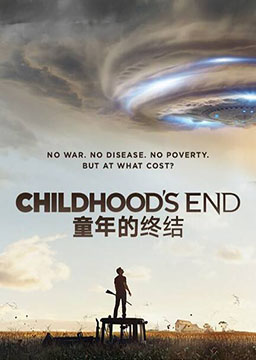
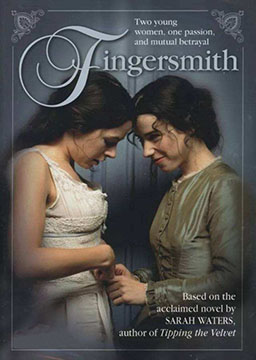
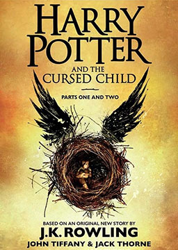
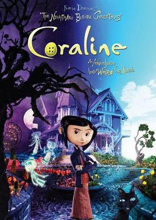
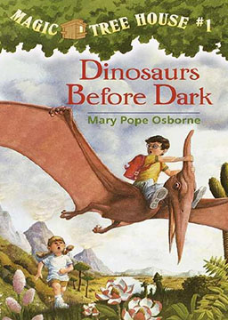
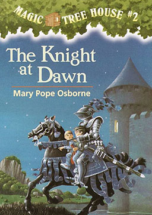

双语小说
收录中英文双语小说300多部，包括世界经典名著、社会小说、悬疑小说等短篇和长篇小说，可按照初中难度、高中难度和大学难度分类阅读，每部小说都有分段中英文对照，点击单词可查看中文翻译。

童年的终结 (Childhood's End)
作者：阿瑟·克拉克 (Arthur C. Clarke) [英国]
克拉克第一部堪称经典的科幻小说。小说开始的场面，即外星人的太空飞船突然降临人类各大主要城市，曾先后被多部影视剧所借鉴，位列“永恒经典”（All-time Best）排行榜第三位，其深远影响可见一斑。内容简介：外星人来到地球，给人类带来了高度发达的文明。最初的全球恐慌之后，人类欣喜地接受了来自外星文明的厚赠。战争消失了、瘟疫消失了，人类历史上的一切灾难都不复存在。但是，人类的社会、国家、民族等诸般价值观念也被彻底颠覆。几个世纪之后，人类已经和过去截然不同。他们已经不再是过去意义上的“人类”。是福是祸？外星人的目的何在？人类这一物种是否已经走到尽头？人类也许仍将延续。但是，它的童年时代一去不复返了！英语美文: 动物 (Animals)
作者：未知 (unknow) [未知]
我看见另一个族类，与人类如影随形，不离不弃，用它们独特而丰富的心灵语言，表达着最真挚动人的情感，教会我们什么是无条件的付出，什么是最无私的爱。动物是如此怡人的朋友，它们不问任何问题，也不提出批评。作为这个地球的监护人，我们有责任去爱护，珍惜和关怀所有生灵。无论人与人还是人与动物之间，都需要真诚的信赖信赖往往创造出美好的境界！
荆棘之城 (Fingersmith)
作者：萨拉·沃特斯 (Sarah Waters) [英国]
英国作家萨拉·沃特斯透过描写维多利亚时代的窃贼文化，编织出结构严谨的历史悬疑小说。作品后被翻拍成 BBC热门影集《指匠情挑》。内容简介：在伦敦郊区的一个大庄园内，居住着李里先生和他的外甥女莫德，李里先生性格乖戾，驱使莫德终日在图书室里整理和朗读藏书。可怜的姑娘从小到大都未踏出过庄园一步，过着暗无天日的生活。某日，一位陌生人的闯入给莫德干涸已久的心灵带来生机，他就是来教莫德画画的瑞斯佛，可天知道，瑞斯佛的真实身份竟然是一个贼，他听说莫德有4万英镑的嫁妆，便想出骗婚这条生财之道。为了确保成功，瑞弗士又找来盗窃团伙里的苏打下手，经过安排，苏成为莫德的贴身女仆。在一步步精心策划下，事情如瑞佛士所期望的方向发展，他不知道的是，莫德和苏之间竟产生了真挚的爱情。苏越来越内疚自责，看到莫德即将被送入疯人院，苏心碎欲绝。可事情很快急转直下，原来一切都非苏想像的那般简单，十几年前就开始精心酿造的大阴谋在等待所有的人，一个晴天霹雳般的真相已呼之欲出
哈利波特与被诅咒的孩子 (Harry Potter and the Cursed Child)
作者：杰克·索恩、约翰·蒂法尼 (Jack Thorne, John Tiffany) [美国]
讲述的是第7部《哈利波特与死亡圣器》19年后的故事。身为“大难不死的男孩”哈利·波特一直生活的很艰难。如今他是三个孩子的父亲、一个超负荷的魔法部职员、一个已婚男人，日子过得并不轻松，与小儿子阿不思的紧张的父子关系尤其令他头痛。最近，魔法部收缴了一个新的时间转换器，怪事自此接连不断。先是阿不思和好友一起失踪，接着哈利的伤疤又痛了起来……哈利和他们的朋友再一次陷入危机，他们勇敢的面对挑战，找寻那个隐藏于黑暗之中的真相。
英语美文: 成功 (Success)
作者：未知 (unknow) [未知]
人和人的价值观都不同，所以对成功的定义也就见仁见智。成功不一定要拥有金钱、地位，但社权会的现实与残酷，金钱和地位是很多人都向往的，是很多人都渴望得到的，所以大家会把成功和财富划等号！朋友，成功不是别人说了算，是自己去把握的，坚持你心中的梦想去努力吧，成功就在下一个路口！没有尝试，就没有成功；唯有面对困难或危险，才会激起更高一程的决心和勇气。如果你希望成功，当以恒心为良友，以经验为参谋，以当心为兄弟，以希望为哨兵。如果你心里有一个大大的目标，不要放弃，不管你感到别人多么冷淡、你自己多么疲惫或灰心。即使我在这里所谈论的每一点都错了，你也要这么做：守住你的梦想——即便它此时此刻并没有那么美妙。不管怎样，都要抓住它。这样，当风暴转晴，你的梦想仍然完美无缺，准备再次上路吧！独立宣言 (The Declaration of Independence)
作者：托马斯·杰斐逊 (Thomas Jefferson) [美国]
独立宣言是一份由托马斯·杰斐逊起草，并由其它13个殖民地代表签署的最初声明美国从英国独立的文件。早在独立前的一百多年间，欧洲启蒙思想就开始在北美传播，为《独立宣言》的发表奠定了理论基础。在欧洲启蒙思想的熏陶下，北美殖民地也产生了自己的启蒙思想家，代表人物是本杰明·富兰克林和托马斯·杰斐逊，他们反对奴隶制，主张人民享有自由、平等的权利。并且喊出了：“没有代表权，就不得征税”（“No Taxation without Representation”）的口号。这句口号原本是英国政治的基本原则，在英国贵族与王室的斗争中使用过，但独立战争期间被殖民者用来捍卫自己的权利。
鬼妈妈 (Coraline)
作者：尼尔·盖曼 (Neil Gaiman) [英国]
美国畅销小说，作者尼尔·盖曼。这是一部既写给孩子、又是写给大人看的风格诡异的幻想小说。小说面世后大受好评，曾获2002年布莱姆·斯托克奖、2003年雨果奖最佳中篇小说、2003年星云奖最佳中篇小说、2003美国图书协会最佳青少年读物等荣誉。内容简介：一扇紧锁的门被打开了，这是一扇通往另一个世界的鬼魅之门。女孩卡萝兰一走进去，就发现了潜伏在门后面的秘密：在这个房子里，她有另外一个“妈妈”，这个亲切的“妈妈”有一双黑纽扣眼睛，她要把她永远地留下来，在镜子后边，她还看到了三个迷失的灵魂，那都是被困在这里许多年的孩子了。为了逃出魔爪，为了拯救自己，她必须运用自己的智慧，逃回到门那边真正的妈妈身边。英语美文: 童年 (Childhood)
作者：未知 (unknow) [未知]
童年是孤单的冒险。在我们生命中出现的人，一些给我们上课，一些让我们痊愈，有的用来分担分享，有的用来真爱。假如我又回到了童年，我会培养我的勇气和毅力，我会事事乐观，我会要求自己更礼貌地对待我的伙伴和那些陌生人，我会学着去为他人的幸福而努力。我会懂得，偶尔要回头看看，否则永远都在追寻，而不知道自己失去了什么。
神奇树屋1: 恐龙谷历险记 (Magic Tree House: Dinosaurs Before Dark)
作者：玛丽· 波· 奥斯本 (Mary Pope Osborne) [美国]
杰克和安妮在树林里偶然发现了一间神奇树屋，树屋里满满的都是书，这对小兄妹还没有搞清楚树屋从哪里来之前，神秘的树屋便把他们带到史前时代。现在，杰克和安妮必须想出回家的办法，他们能在天黑之前回到家吗？还是会成为暴龙的晚餐呢？此外，杰克在恐龙的年代捡到了一枚上面刻着M字的金色徽章，究竟是谁比他们更早来这里拜访恐龙，而M又代表了什么意思呢？
神奇树屋2: 迷雾里的骑士 (Magic Tree House: The Knight at Dawn)
作者：玛丽· 波· 奥斯本 (Mary Pope Osborne) [美国]
这一回，神奇树屋把杰克与安妮带到中古世纪去了！跟着黑马骑士，兄妹俩闯进正在举行宴会的城堡，这对不受欢迎的小兄妹，被守卫关进了地牢，他们要如何逃脱？路上又会遇到什么危险呢？还有，在这一集里，杰克发现了夹在书中的书签上，竟然也刻着和徽章上一模一样的M字，这两者间又有什么关联？